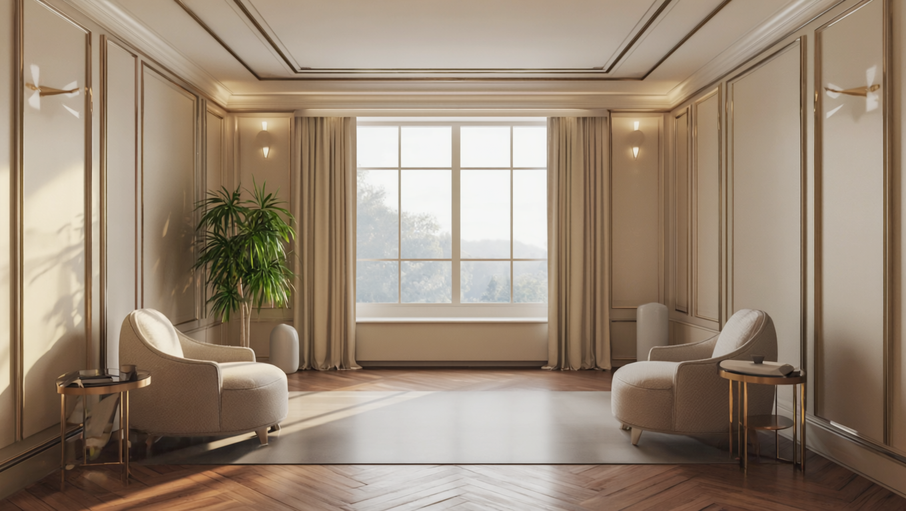

60-90 минут, которые показывают то, что не видно годами. Работа один на один с Дарьей: с состоянием, решениями и телом.
Пройдено многое: психологи, коучи, марафоны, книги. Про травмы, установки и сценарии известно всё. Только знание не равно изменение.
Между «я всё понимаю» и «я живу иначе» лежит пропасть. Можно прочитать тридцать книг и пройти десять марафонов, знать причину наизусть и каждое утро возвращаться в ту же точку.
Так работает корень. Пока он на месте, человек разбирает слой за слоем, а программа запускается снова. Одним хватает одной встречи, другие годами ходят по кругу. Разница в том, доходят ли до корня.
«За 15 лет терапии никто не увидел того, что ты увидела за 60 минут».Марина, 37 лет
Корень это решение или момент, который когда-то запустил всю цепочку. Не анализ вокруг да около, а прямой доступ к тому, что скрыто за слоями привычных объяснений.
Спокойно, бережно и по делу. Тебе не нужно готовиться, достаточно прийти со своим запросом.
С чем человек пришёл и что хочет поменять. Формулируем честно, без красивых слов.
Дарья ведёт к тому решению или моменту, который запустил цепочку. Становится видно то, что годами было скрыто.
Становится видно, как именно это управляло жизнью. В этот момент хватка ослабевает сама.
Решение меняется изнутри, на уровне состояния и тела, а не на словах. Это и есть точка невозврата.
Остаётся ясность и конкретика, что делать дальше. Запись встречи сохраняется навсегда.
Не «понятно больше», а «жизнь иначе». Многие ловят сдвиг уже в первой встрече.
Одна точная встреча или целый месяц личной работы рядом.
Одна встреча с корнем запроса. Разбираем, что держит на месте, и меняем решение, которое когда-то было принято и забыто. Запись остаётся у тебя навсегда.
Месяц личной работы с Дарьей: с мозгом, паттернами и телом. Для тех, кто хочет максимальный результат в короткий срок и поддержку на всём пути.
Психолог часто разбирает слой за слоем. Здесь работа идёт сразу к корню: решению или моменту, который запустил всю цепочку. Поэтому сдвиг часто случается за одну встречу.
Многим хватает одной, чтобы увидеть корень и сдвинуть его. Если запросов несколько или хочется поддержки на пути, есть VIP-сопровождение на месяц.
Дарья ведёт бережно, в комфортном темпе. Глубина ровно та, к которой человек готов. Достаточно прийти со своим запросом, готовиться специально не нужно.
Онлайн, один на один, 60-90 минут. Запись встречи остаётся у тебя, к ней можно вернуться, чтобы закрепить.
Кнопка «Записаться на сессию» или сообщение в поддержку: поможем выбрать время и формат.
Запишись на сессию или напиши, и подберём формат под твой запрос: одна встреча или месяц сопровождения.
Записаться на сессию